1982 aastal moodustati Tartu Riilikus Ülikoolis (TRÜ) mikroprotsessortehnika töörühm.
TARTU ARVUTI väljatöötlus algas Leo Henn Humala juhtimisel 1983 aastal mil loodi Tartu Riikliku Ülikooli mikroprotsessortehnika sektor. Leo Henn Humala visiooniks oli luua kompaktne, võimekas arvuti mille kogu funktsionaalsus asub ühel emaplaadil ehk teisiõnu üheplaadi arvuti. Üheplaadi arvuti konseptsiooni kasuks otsustas Leo Henn Humal suuresti tänu kohtumisele ESTRON'i tehasega mis oli huvitatud taolist arvutit tulevikus tootma.
TARTU arvuti oli mõeldud universaalseks kasutamiseks, nii kooliarvutina kui ka tõsisemaks tööks. Emaplaadi laiendussiini kaudu oli võimalik ühendada lisaseadmeid ja arvuteid omavahel võrku.
TARTU arvuti koosnes tol ajal kättesaadavatest komponentidest, et tagada tootmise rentaablus ja võimalikkus tulevikus. Kallid, keerulised lahendused, defitsiitsed või välismaised komponendid oleksid sellise plaani välistanud.
Selleks, et luua arvutit oli vaja arvutit.
Leo Henn Humal
TARTU arvuti esimene trükkplaat joonestati Apple II arvutil millele Jaan Kaasik oli programmeerinud trükkplaatide trasseerimise (joonestuse) programmi mida Leo Henn Humal täiendas topelt ja diagonaaljoonte võimalusega. Apple II 64KB operatiivmälu suurus oli just piisav hoidmaks mälus TARTU emaplaadi üht külge. TARTU emaplaadi tootmiseks oli vaja läbipaistvale kilele ülitäpselt trükkida trükkplaadi matriits, selline seade puudus. Selleks otstarbeks ehitas Leo Henn Humal ringi fototelegraafi NEVA FPBF-1 (НЕВА ФПБФ-1) ja ühendas selle Apple II arvutiga. TARTU arvuti emaplaadi suuruse (väiksuse) määrasid Apple II operatiivmälu ja fototelegraafi trükitrumli suurused.
Sel ajal kui Leo Henn Humal projekteeris ja valmistas esimese TARTU arvuti emaplaati, programmeris Olev Toom Apple II arvutil esimese versiooni TARTU arvuti püsimälus asuvast Monitor programmist. Monitor programmeeriti Leo Henn Humala poolt loodud programmaatori abil 0.5KB ühekordsetele PROM püsimäludele. Tähelepanuväärne oli see, et TARTU arvuti läks käima esimesest katsest.
Apple II arvutile oli lisatud Microsoft Z-80 Softcard mis võimaldas kasutada CP/M operatsioonisüsteemi. Selle abil töötati välja esialgne TARTU arvutile tarkvara. Peale esimese TARTU arvuti valmimist jätkati TARTU edasist arvuti riistavara ja tarkvara arendamist TARTU arvutil endal.
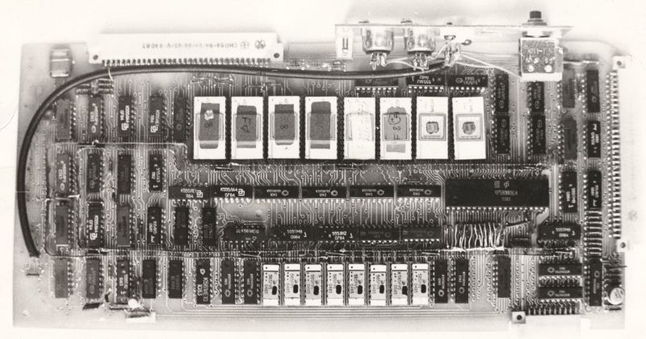
TARTU arvuti emaplaat mõõtmetega 295mm x 135mm
1959 aastal jõudis Tartu Riiklikku Ülikooli Eesti esimene elektronarvuti URAL-1.
Tartu Riikliku Ülikooli arvutuskeskuse 25 aastapäeval tuletati meelde 50'ndate aastate lõpu vaidluseid.
Tartus on arvuti,Tallinnasse oleks ka äkki arvutit vaja või piisaks Eestile ühest arvutist?
Mul oli õnn oma kõnes öelda, et mina otsustasin, et igaühele on arvutit vaja, mitte ainult Tallinnale või Tartule.
Sellepärast asusimegi Tartu arvutit tegema.
Leo Henn Humal
1984 aastal valminud esimene TARTU arvuti oli tehniliselt hästi läbi mõeldud ja kompaktne. Emaplaat mahtus ära klaviatuuri alla, olles teistest (ka tulevikus konstrueeritavatest) sama funktsionaalsusega Eesti NSV arvutitest vähemalt
2-3 korda väiksem. See osutus võimalikuks kuna Leo Henn Humal saavutas kahekihilise trükkplaadi abil neljakihilise plaadi omadused jättes kogu trükkplaadi pindala loogikasignaalide jaoks, lisades emaplaadile välised voolusiinid. Lahendusi tuli leida ka välisseadmete ühendamiseks. Kodumaine disketiseadmete juhtimise mikrokiip КР1818ВГ93 (WD 1793 koopia) oli defitsiit. Seetõttu konstrueeris Leo Henn Humal disketiseadme kontrolleri kasutades tollal saada olevaid lihtsamaid elektroonikakomponente. TARTU arvuti disketiseadmed töötasid ebastandartse MFM kodeeringuga (Leo MFM). TARTU arvuti lisaseadmetena võis kasutada printereid, kassettmagnetofoni, 5.25" ja 8" disketiseadmed, suurarvuti kõvakettaid. TARTU arvutid oli võimalik omavahel ühendada arvutivõrku, andmevahetuseks, jagamaks ühte printerit või disketiseadet mitme arvuti vahel.
Esimeste TARTU arvutite korpused valmistati pleksiklaasist pneumaatilise vormimise teel Arved Aleksander Tammiku laboratooriumis. Klahvideks kasutati lauakalkulaatori klahve millele kirjutati käsitsi peale tähemärgid. Meistriteoseks võib lugeda Leo Henn Humala poolt konstrueeritud metallist tühiku klahvi mille sisse integreeriti kaval mehhanism.
Kui TARTU arvuti oli valmis esitleti seda ESTRON'i tehasele mis konstrueeris korpuse maketi prototüübi ja sisemise toiteploki. ESTRON'i tehases TARTU arvuti tootmisse ei jõudnud.
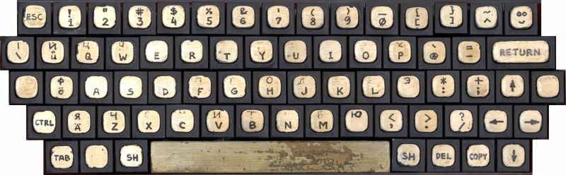
TARTU arvutist sai esimene Eestikeelse klaviatuuriga arvuti
TARTU arvutist sai esimene Eestis toodetud kooliarvuti. 1985 aastast töötas Tartu Riiklikus Ülikoolis Tartu arvutitega varustatud arvutiklass millel õppisid majandusküberneetika II kursuse õpilased ja huvilised Nõo keskkoolist.
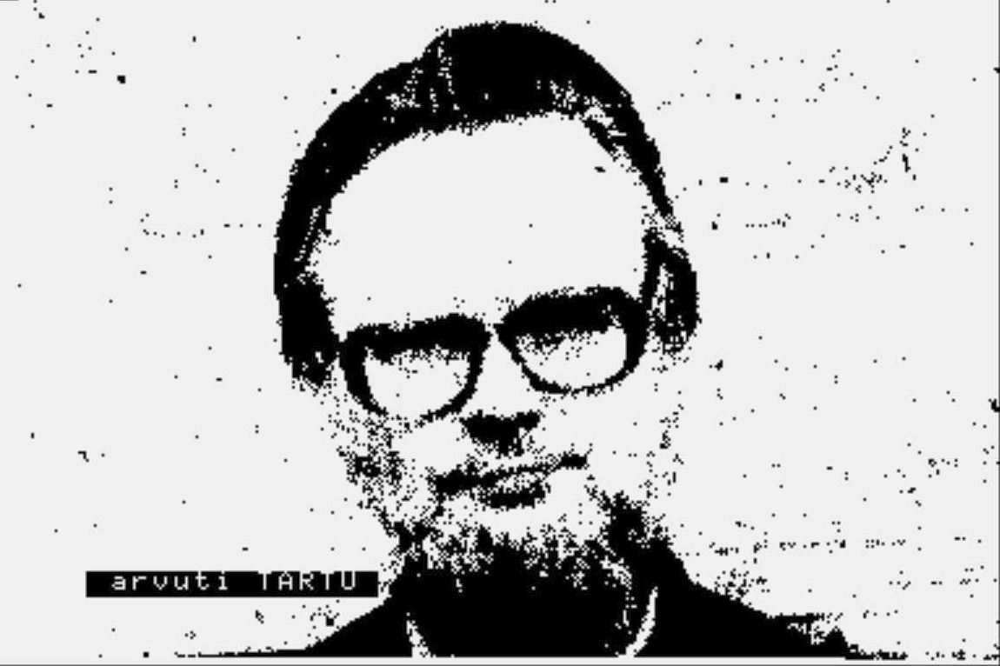
Leo Henn Humal |
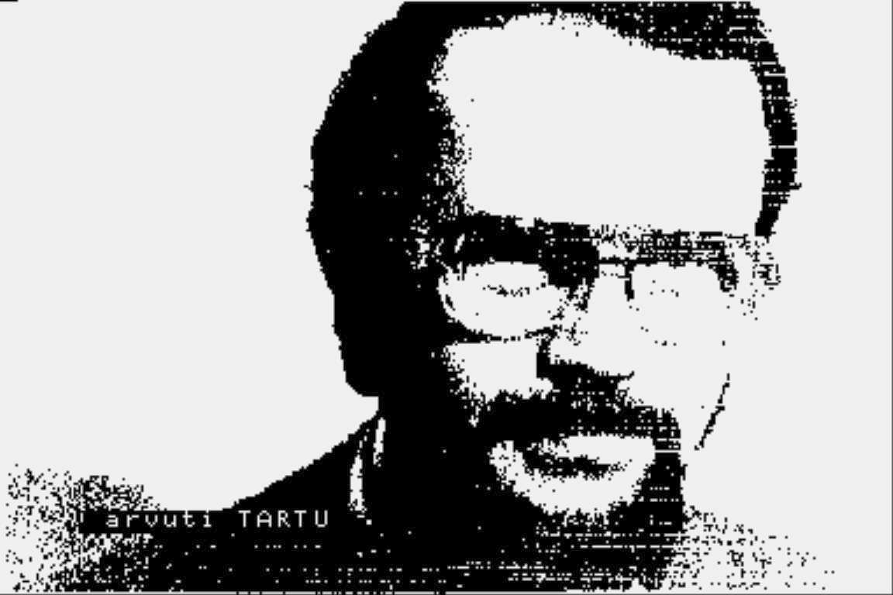
Jaan Kaasik |
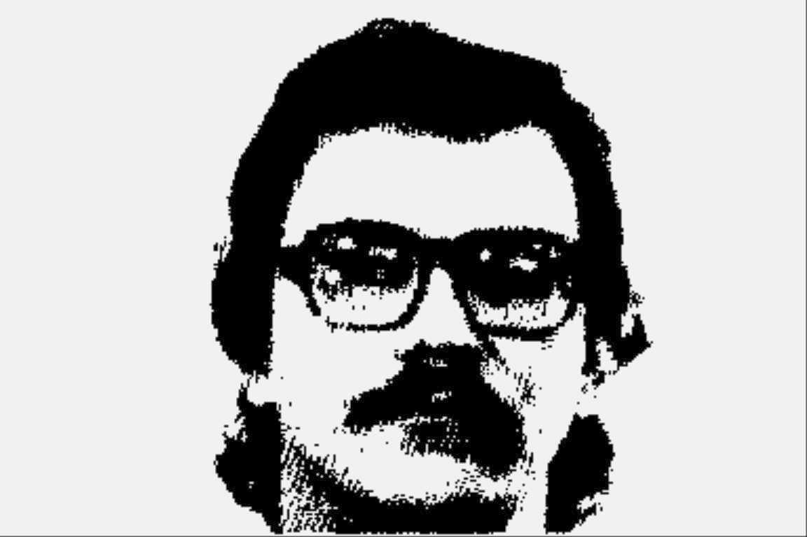
Olev Toom
|
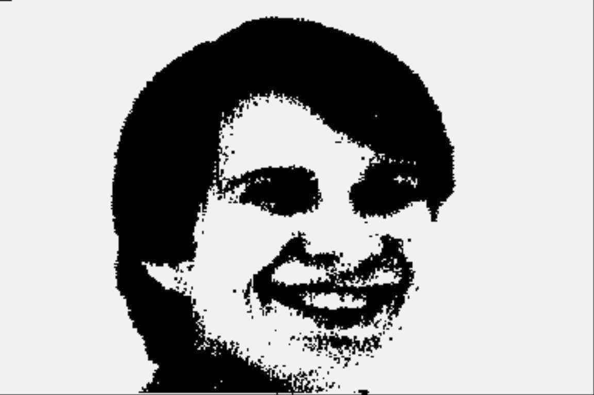
Mai Toom |
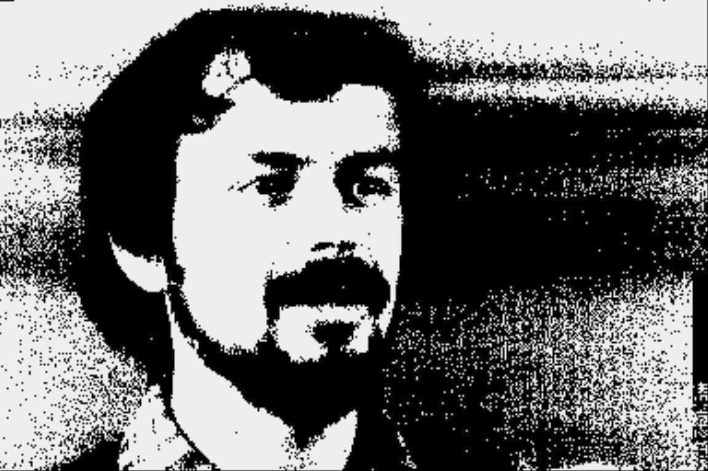
Urmas Lõvi |
TARTU arvuti abil fotografeeriti mustvalgest videokaamerast otse arvutisse esimesed teada olevad Eesti digitaalsed fotod resolutsiooniga 384 x 256, värvisügavusega 1 bitt.
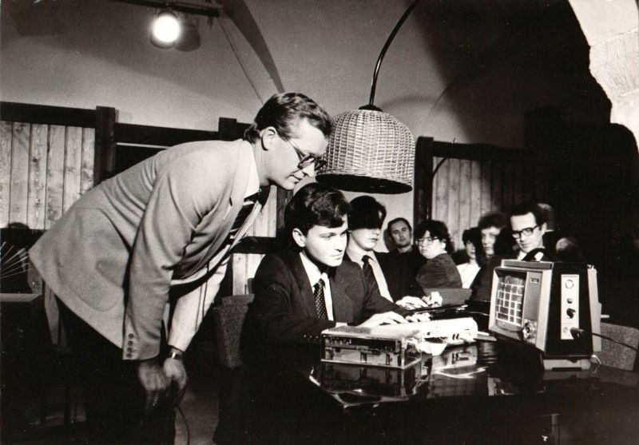
Priit Humal demonstreerimas telesaates Reklaamiklubi TARTU arvutil enda programmeeritud arvutimängu "Paanika", 25 novembril 1985
1986 aastal A.S. Popovi nimelise Raadiotehnika, Elektroonika ja Side Teaduslik-Tehnilise Ühingu poolt korraldatud Eesti NSV kooliarvuti konkursil sai TARTU arvuti II koha. Hinnangu andmisel oli üheks oluliseks argumendiks, et TARTU arvuti sisaldab välismaised komponente. Selle väite tõesus ei ole kaugeltki kindel.
TARTU arvuti leidis palju erinevaid rakendusi. Sellega programmeeriti, tehti kontoritööd, viidi läbi teaduslikke eksperimente ja õppetööd, projekteeriti elektroonika türkkplaate, tehti digitaalseid fotosid, juhiti suuri kaardiplotterid, juhiti Antsla Marati juurdelõikusrobotit, korraldati kolhooside raamatupidamist, juhiti müograafi ja isegi valedetektorit. Kaardirakenduste ettevõte Regio alustas TARTU arvutil. Tööstuslikult kasutati TARTU arvutit ka
Tartu Kontrollaparatuuri tehase magnetpeade kontrollimise stendi ja
Võru Gaasianalüsaatorite tehase analüsaatorite kalibreerimise stendi juhtimiseks.
TARTU Palivere EMT arvuti
1988 aastast hakati TARTU arvutit tootma Palivere ehitusmaterjalide tehase automaatikaseadmete tsehhis.
Hallis metallkorpuses TARTU arvutit pakuti tolle aja kohta muljetavaldava komplektina koos monitori, disketiseadme, kassettmagnetofoni, printeri ja tarkvaraga.
Palivere Ehitusmaterjalide Tehasele ei olnud plaanimajanduse korras ette nähtud komponente arvutite tootmiseks. Oli olemas ametlik kanal nimega mittelikviidsete materjalide ja komponentide turg mis kohustas ettevõtteid oma seisvaid laojääke müüma. Arvukate sihikindlate päringute abil suudeti hankida sellel teel osa komponente.
Defitsiitsete lisaseadmete hankimine oli, aga väga keeruline ülesanne ja seisnes suuresti bartertehnigutes mille käigus lisaseadmed vahetati teenete või ehitusmaterjalide vastu.
Näiteks arvuti monitoride saamiseks tarniti tootjatehasele koormate kaupa Eesti NSV's toodetud puitlaasplaate. Sarnaste "käsi-peseb-kätt" bartertehingute abil hangiti ka kassetmagnetofonid, printerid, disketiseadmed jt..
Plaanimajanduse ajastu asjaajamisi illustreerib hästi arvuti metallist osade tootmise korraldamine. Palivere EMT'l endal selleks võimekus puudus.
Arvuti korpused valmistati Harju KEK'i kilbitsehhis. Ametlik kokkulepe oli, et plekkmaterjali selleks tarnib Palivere EMT. Korpus tehti paksust plekist, krunditi ja värviti halli auto emailvärviga ja kuivatati ahjus. Hiljem, aga tuli Harju KEK'i juhtkonnalt nõudekiri,
et tõestataks, et Palivere EMT on vajaliku plekkmaterjali korpuste jaoks üldse tarninud. Kõik tõendid loomulikult esitati. Ülejäänud metallist detailid toodeti erinevates metallitöökodades sarnaselt huvitaval viisil. Palivere EMT sõlmis töövõtulepingud otse metallitöökoja töölistega ja töökoja juhatajaga, töö tehti ära ja maksti sularahas. Palju detaile hangiti ka RET'i tehastest millele Palivere EMT automaatikatsehh tegi alltöövõttu.
Arvuti toiteplokk telliti algselt EKTA'st, aga tunnistati kõlbmatuks kuna see oli lühises. Toiteplokk projekteeriti kohapeal oma jõududega ringi ja sellest sai Palivere EMT toode.
Klaviatuuri jaoks hangiti lauaarvutite klaviatuuride paneelid mis lõigati nupu kaupa lahti. Tehasest hangiti tühje arvutiklaviatuuri klahve millele käsitsi graveeriti tähemärgid.
Elektroonika trükkplaadid telliti Lääne Kalurist. Nendega ilmnesid probleemid elektriliste läbiviikude (VIA'de) kvaliteedis. Vigaste trükkplaatide läbiviikaugud joodeti traadijuppidega üle.
TARTU Palivere EMT arvutis oli 170 komponenti ja 1600 jootepunkti mis monteeriti kõik käsitsi.
Tartu Riikliku ülikooli logoga siiditrükk tehti kohapeal. Tartu Riikliku Ülikooli logo tuli ilusti välja, Palivere EMT logo läks nahka.
Palivere põhikoolile müüdi 1992 aasta mai kuul 10 TARTU Palivere EMT arvutit millega sisustati arvutiklass.
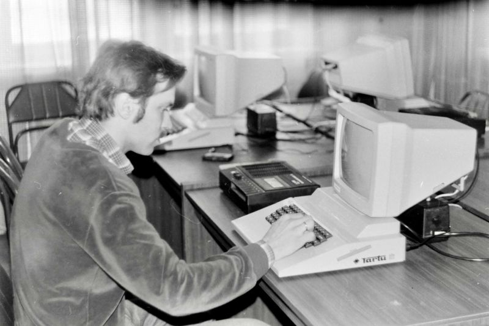
Urmas Tingas kasutamas TARTU Palivere EMT arvutit
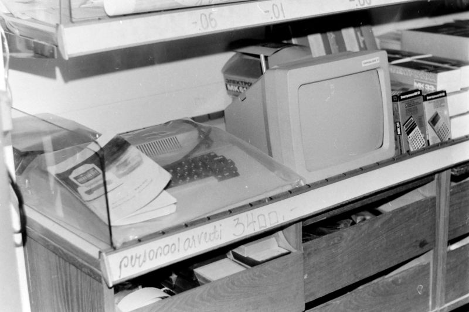
TARTU Palivere EMT arvuti müügil 1990 aastal Haapsalu kaubamajas hinnaga 3400 rubla
Tradex AS (endine Palivere EMT) raamatupidamise arhiivi andmetel müüdi kokku 62 TARTU Palivere EMT arvutit. Viimane arvuti müüdi Läänemaa maksuametile 1992 aasta mai kuus, hüperinflatsiooni tingimustes, aga juba hinnaga 20 000 rubla.
ISKRA 1080 TARTU
Jaan Kaasiku eestvedamisel tutvustati TARTU arvutit Stšotmaši (Счётмаш) tehasele Venemaal, Kurskis. Tehase konstrueerimisosakonna juhataja käis Tartus arvutiga tutvumas. TARTU arvuti elegantne tehniline lahendus äratas huvi, lisaks sooviti, et TARTU arvuti oleks vastavalt GOST standardile vähemalt 8 värviline ja 512 punktilise ekraani resolutsiooniga.
Leo Henn Humal projekteeris täiendused mis muutsid TARTU arvuti värviliseks ja lisasid täiendavad ekraani režiimid, kuni 16 värvi ja 768 x 256 pikselit. Värviline TARTU arvuti koos tarkvaraga anti edasi Kurski tehasesse.
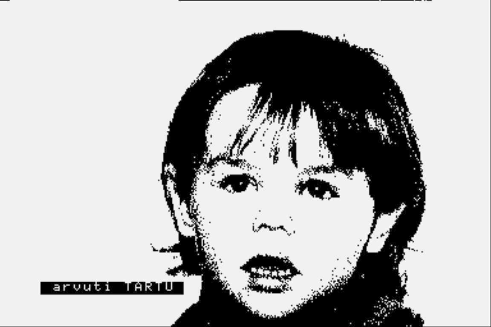
Marika Peterson |

Urmas Jr. |
Koos prototüübi ja tarkvaraga anti Kurski tehasele üle ka mõned TARTU arvutiga loodud digifotod.
Nende kahe lapse fotod levisid ISKRA 1080 TARTU arvutiga kaasas olnud programmidega
helikassetil üle terve Nõukogude liidu.
TARTU arvuti loojate tingimus oli, et toodetava arvuti nimi peab sisaldama sõna TARTU.
Selliselt tekkiski arvuti nimega ISKRA 1080 TARTU.
Kurski tehases loodi arvutile uus emaplaat mis sisaldas Leo Henn Humala poolseid täiendusi, uus korpus, lisati herkonitega klavituur ja 4K ROM mälu (kokku 20KB). Sündis arvuti ISKRA 1080 TARTU. Kurski tehas planeeris toota arvutist 4 versiooni 1080, 1082, 1083 ja 1084. Kui 1080 toetas välismäluna ainult kassetmagnetofoni, siis 1084 toetas väliseid kettaseadmeid, ühendus arvutivõrku ja oli kasutatav terminalina. Lisaseadmetena märgiti ka kursorihoob (joystik). Hetkel teadaolevalt toodeti ainult 1080 versiooni. ISKRA 1080 TARTU läks tootmisse 1987 aasta lõpust. Tootmise algus takerdus kuna arvutid ei hakanud tööle. Leo Henn Humal koos Aleksander Štulbergiga sõitsid Kurskisse, tuvastasid vigaselt tarnitud KP11 mikroskeemid, arvutid hakkasi tööle ja tootmine sai jätkuda. Olemasolevate arvutite seerianumbrite põhjal tundub, et toodeti vähemalt üle 10 000 arvuti. TARTU arvuti on enim toodetud Eesti NSV'st pärit arvuti.
23 mail 1988 aastal sai ISKRA 1080 TARTU arvuti üleliidulisel NVDH rahvamajanduse
näitusel
ajaloo ainsa Eesti NSV päritolu arvutina kuldmedali.

Leo Henn Humal sai TARTU arvuti
loomise eest preemiaks 150 rubla
|